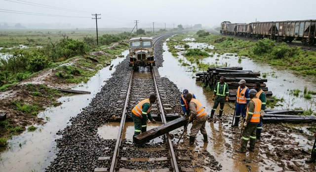

Ballast work on the Kembe line, between showers.
THE KALUNDA DAILY
Caption goes here
The Meteorological Service confirmed that rainfall began across the Buyu valley on Tuesday night, with heavier showers expected over the coming days. The Ministry of Transport has inspected all major routes and reports that the Kembe–Mbuyane paved road and the Lukunda–Nsimbi corridor remain fully passable.
"Our forces are monitoring the situation around the clock," said a spokesperson for the Ministry of Transport. "The roads are holding, and we have no reports of flooding on the primary arteries."
The Government urges citizens to remain calm and to trust the official channels of information. Relief supplies continue to move through the valley, and the depot at Mbuyane remains operational.
The only closure reported is a 3-kilometre section of the gravel spur east of Buyu South, which has been temporarily closed due to surface water. The closure is expected to last two to three days, and a diversion route via the eastern track is in place. Motorists are advised to use the diversion.